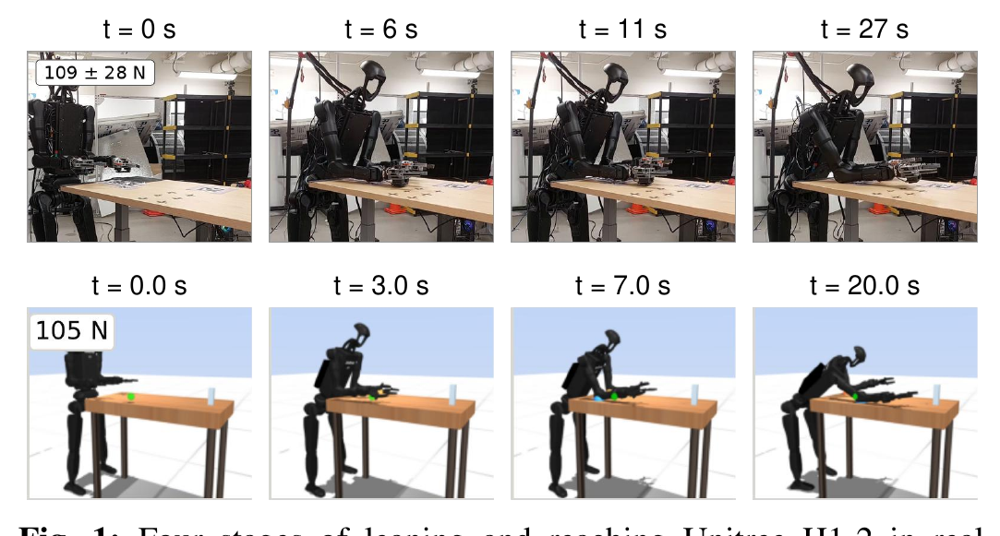
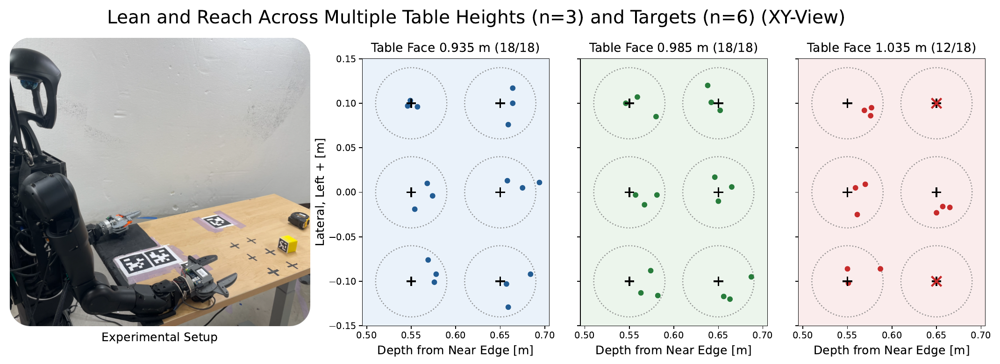
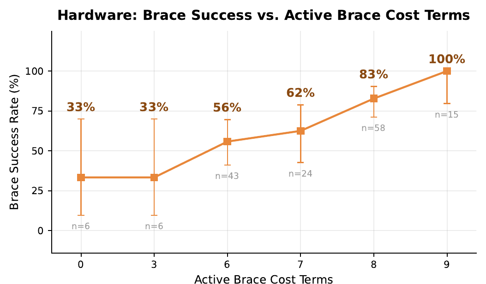
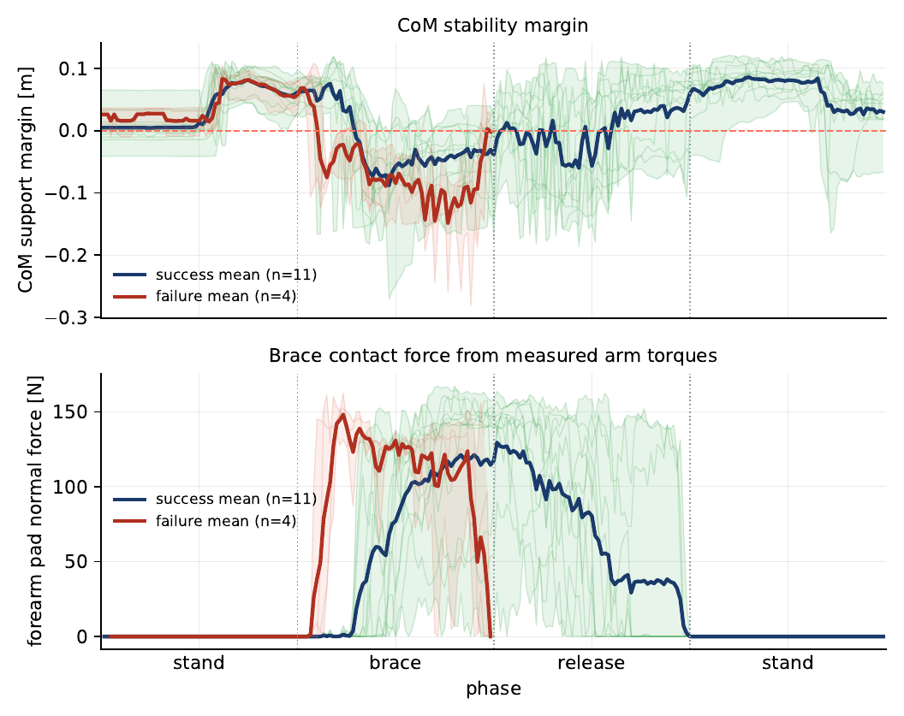
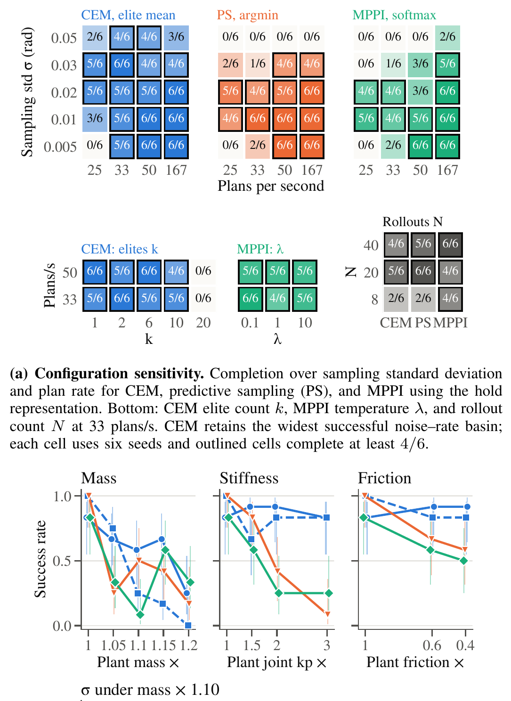

Abstract
We study supported reaching to extend a humanoid robot's workspace by bracing against the environment for stabilization using exclusively local sensing. While current solutions for whole-body humanoid control aim at avoiding contact, contact is needed to reach objects that are not directly placed at the edge of a table. We employ a sampling-based model-predictive control (MPC) framework for whole-body leaning, bracing, reaching, and recovery on a Unitree H1-2 humanoid. The controller runs in real time at 33 Hz, transfers sim-to-real, extends reach by more than 40 cm beyond the unbraced standing workspace, and sustains the loaded posture for over four minutes, before pose estimation drifts. The controller reaches the commanded target in 89% of trials and completes the full reach-and-recovery cycle in 81%, across 54 trials spanning six targets and three table heights. We further characterize stability, contact loading, and end-effector precision, and analyze failure modes and sampling-based planner sensitivity.
- Reach beyond the unbraced standing workspace+40 cm
- Loaded posture sustained4+ min
- Commanded reaches completed (48/54, six targets × three table heights)89 %
- Full reach-and-recovery cycles (44/54)81 %
- Target accuracy, wrist-camera measured (±0.9, n=48 holds)2.7 cm
- Maximum-extent reaches completed on hardware (11/15)73 %
- Planning rate, 20 rollouts over a 1 s horizon, laptop CPU33 Hz
Results






